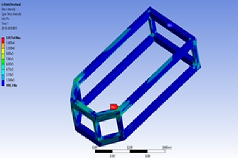
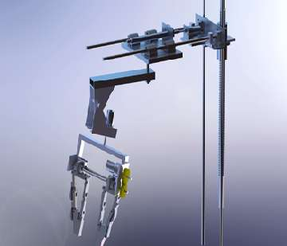
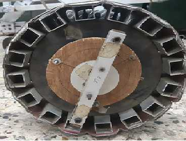
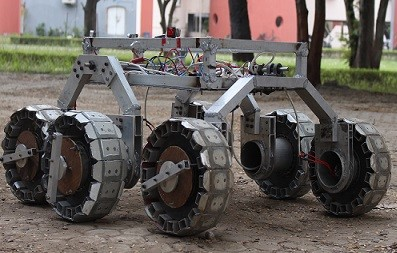
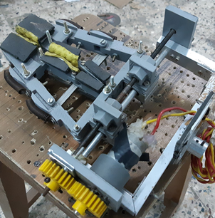

Mechanical Subsystem

CHASSIS
- The chassis frame is made of aluminium box section profiles, brazed together to form a lightweight and robust frame.
- The placement of all the components is done with the goal to achieve a low centre of gravity, towards the geometric centre of the rover.
- The load is evenly distributed throughout the structure, and the maximum intensity calculated is well under the yield strength of the aluminium profiles used.


MANIPULATOR
- A Modified version of a SCARA Robotic arm design with 6 degree of freedom and a 3-D printed parallel gripper end effector has been implemented, which has a linear axis in place of the primary revolute axis. The linear axis makes the operation of the end effector easier.
- It consists of 2 prismatic joints and 2 revolute joints, being operated by two lead screws and two worm gear assembly, making the assembly light and powerful.
- The gripper has been 3D printed to achieve a lightweight structure capable of withstanding heavy transverse and shearing stresses. In practice, the manipulator is capable of lifting loads up to 5 kgs.
WHEEL
- Customized wheels are manufactured to provide traction and support the six-wheeled differential drive.
- Larger diameter wheels are designed to increase the ground clearance.
- The wheel is mounted on the aluminium cylinder (which is further fixed to the rockers) with the help of bearings which provided effective rotation of wheels.
- For increasing the diameter of the wheel, aluminium box section is used. Now to generate the circular profile composite material is used. This composite sheets is further modified to facilitate turning using differential drive.


SUSPENSION
- The Rover is configured to a six wheeled triple-rocker system with two front rockers and a rear rocker.
- All the rockers are independent from each other and are hinged to the main frame, thereby rotating when faced with an obstacle. The rear rocker substitutes for the differential stability provided by a traditional bevel gear or pivoting mechanism.
- This provides stability to the chassis, maintaining its pitch angle, which ensures optimal performance of the onboard electronics and, the camera feeds.
- Maximum ground contact is achieved due to unconstrained rotation of the rockers, thereby enhancing obstacle climbing capabilities and reducing the probability of the chassis toppling over. This layout is less prone to mechanical failures than the basic rocker bogie system.
END EFFECTOR
- The end effector we have used is a parallel gripper having adaptive fingers.
- The opening and closing of the gripper is controlled by rotation of a stud having left-hand and right-hand threads for respective fingers. When this stud rotates, the whole finger assembly moves due to the corresponding nuts fixed to them.
- The gripper has two motions, one being the rotation of the gripper and second being the opening and closing of the fingers.
